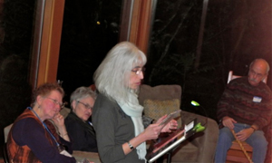
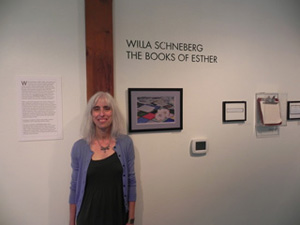
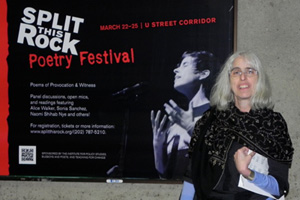
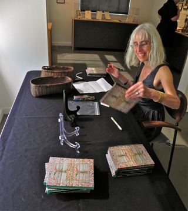

Willa Schneberg was born in Brooklyn, New York. Her second collection In The Margins Of The World, Plain View Press, was awarded the 2002 Oregon Book Award for Poetry. She has won two Oregon Literary Arts Fellowships in poetry, and received a grant in poetry from the Money for Women/Barbara Deming Memorial Fund. Her poetry has appeared in the American Poetry Review, Tikkun, Michigan Quarterly Review, Southern Poetry Review, among others. Click here for a full bio.
Contact Willa at info@threewayconversation.org

2013 READINGS & EVENTS
November 26
Willa will read with Christianne Balk, Sarah Bartlett, Daneen Bergland, Kate Lebo, Lex Runciman, Clemens Starck, W. Vandoren Wheeler and John Sibley Williams, Barnes & Noble, 7 - 8:30PM, 7700 NE Fourth Plain Blvd, Vancouver, WA
November 12
Willa will mc and read with David Axelrod, Kerry Cohen, Ruth Tenzer Feldman, Jodi Varon and Yuvi Zalkow at the Jewish Voices: Annual Reading by Jewish Writers, Oregon Jewish Museum,1953 NW Kearney St., Portland; Ticket Info: General Public: $8; OJM Members: $5. No one will be turned away because of inability to pay. For reservations: call the museum: 503 - 226- 3600 or reserve on-line: www.ojm.org.
August 11
Willa will read with Toni Hanner, 7PM,
Stonehenge Studios, 3508 SW Corbett Ave., Portland
May 12
Willa will read with other contributors from The Portland Review,
Sunday, May 12, 3:30 - 5:30PM, Afru Gallery, 534 SE Oak Street,
Portland
May 5
Willa will read from The Books of Esther, a limited edition letterpress chapbook
and from the anthology Alive at the Center with Judith Barrington and Leah Stenson
regional editor of the anthology, Saturday afternoon, NW Poets' Concord,
Hallmark Inn, Newport, Oregon
April 19
Contributors from Alive at the Center:
Contemporary Poems from the Pacific Northwest,
(a poem of Willa's is included in the anthology),
Friday, 7-9PM, Literary Arts, 925 SW Washington Street, Portland
JANUARY 20
Willa and Robin Bagai will host an event to celebrate the life and work of William Stafford. Featuring Frances Payne Adler, Constance Hall "M," Philip Kenney, Emily PIttman Newberry, Mark Owens, and FWS Board Member Emerita Sue Einowski. Sunday, 2-4PM, Blackfish Gallery, 420 NW 9th, Portland.
2012 READINGS & EVENTS
NOVEMBER 18
Willa will read with Barry Lopez, Debra Gwartney, and Ingrid Wendt at a Calyx Fundraiser, Sunday, November, 18th, Eugene.

Calyx Fundraiser Reading, Eugene, founding editor Margarita Donnelly, (left)
OCTOBER 13
Willa will teach a workshop: INVITING LITTLE RED RIDING HOOD, THE ORACLE, AND THE COAT OF MANY COLORS INTO OUR POEMS, Wordstock, 12 pm, Saturday, October 13th, D-140, Oregon Convention Center, Portland. Fee: $35, to register contact Wordstock: http://wordstockfestival.eventbrite.com

SEPTEMBER 12 (Opening)
The Books of Esther: An interdisciplinary exhibition of the life of one woman who "talked" through writing. At the Oregon Jewish Museum, 1953 NW Kearney Street, Portland, OR 97209. Call 503-226-3600 or visit http://ojm.org
Opening is 5:30 - 7:30PM. Runs September 12, 2012 - November 25, 2012
AUGUST 30
Willa will read with the editor of Before There is Nowhere to Stand. Palestine/Israel Poets Respond to the Struggle, Joan Dobbie, and other contributors, 7PM, Broadway Books,1714 NE Broadway.
March 31
Willa will read with other contributors to VoiceCatcher 6, Sat. 2PM, Central Library, Portland.

March 15
Willa will read with Melissa Madenski in the "Comma" Series, Thurs. 7PM, Broadway Books, 1714 NE Broadway.
|
Latest Updates
-
Willa received a Professional Development Grant from the Regional Arts & Culture Council (RACC) to attend the Colrain Poetry Manuscript Conference, July 12 -15, Green Gulch Farm, Marin, CA.
-
Below is the opening from Katherine Bielewa Stamper's article Little Details: Anatomy of a Poem about Willa's poem "Biscuits:"
"I first encountered this poem while driving along I-89 towards Burlington. It was 8:35 on some weekday morning and I was listening to Garrison Keillor's 'Writer's Almanac' on Vermont Public Radio.
So taken by the poem, I pulled over when it was safe to jot down the name of the poem and its author. Poetry can truly move us, if we open our ears to just listen."
Read the complete article here:
http://www.willistonobserver.com/little-details-anatomy-of-a-poem/
-
Willa is a contributor to Alive at the Center: Contemporary Poems from the Pacific Northwest to be published this April through Ooligan Press. Check out her guest blog poet From the Enchanted Tower to Publishing�s Rutted Road on Ooligan's website.
-
Capturing the Essence of Things: A conversation with Willa Schneberg
Willa's art is where truth and beauty intersect. The subjects she chooses are often painful or horrifying. But she chooses details that bring out the beauty in those subjects. Not in a way that romanticizes them or downplays the sadness. The beauty and the sadness exist side-by-side.
S.H. Aeschliman interviews local poet, ceramic artist and photographer Willa Schneberg. They talk writing, loss and defying conventions, while wandering through Willa's exhibit "The Books of Esther" at the Oregon Jewish Museum. Read the full interview here.
-
Check out the article in Sept. 2012 Oregon Jewish Life about Willa and The Books of Esther: http://ojlife.com/2012/sep/family/jewish-mothers-voice
-
Willa was interviewed by Ed Kraus on the September 30th "Yiddish Hour," KBOO community radio, Portland, about The Books of Esther. Click here to listen to the interview (right-click to download).

-
The Books of Esther: An interdisciplinary exhibition of the life of one woman who "talked" through writing
At the Oregon Jewish Museum, 1953 NW Kearney Street, Portland, OR 97209.
Call 503-226-3600 or visit http://ojm.org
September 12, 2012 - November 25, 2012
OPENING: September 12, 5:30 - 7:30PM
Willa Schneberg's mother, a first generation American, was a survivor of larynx cancer, and wrote what she would normally speak. Willa utilizes ceramic sculpture, photographs, audio clips and personal objects to reveal how memory, language, Jewish identity, work, disability and aging, shape a life. Schneberg has created the echo of the voice no longer there, the shape of the hand that held the pen. This exhibition is about the artifacts of our lives, and how we infuse them with meaning. The Books of Esther also embodies the essential contribution of written language, and how one woman's need to communicate trumped her disability.
A letterpress chapbook of poems about her mother will be available in conjunction with the exhibit.
-
Check out Willa' poems in the current issue of The Barefoot Review at: http://barefootreview.org/winter2011.html#willa_schneberg.
- Check out Garrison Keillor reading Willa's poem "Spilled Milk" on a recent Writer's Almanac: http://writersalmanac.publicradio.org/index.php?date=2011/10/06.
-
Check out Willa reading her poems on the Oregon Poetic Voices website: http://oregonpoeticvoices.org/poet/198/
-
Photos from Willa's Opening Guardino Gallery, Portland Oregon, March 31 - April 24, 2011.
Willa Schneberg's ceramic sculpture "Eternal Flame Torah Pointer (yad in Hebrew) was donated by Nathan Cogan
In Memoriam of Sara Cogan to the Havurah Shalom Synagogue, Portland Oregon. The work is on permanent display in
the space where services are held. A picture of the sculpture is below:

"Hill of Crosses" by Edis Jurcys
Willa is the English language editor for Hill of Crosses, Gardens of Life, images of Lithuanian-American
photographer Edis Jurcys (cover below), who reveals through his intimate lens, the preservation of the sacred and the
constantly renewing spirituality of one of the most unique places in Lithuania - the Hill of Crosses.
|